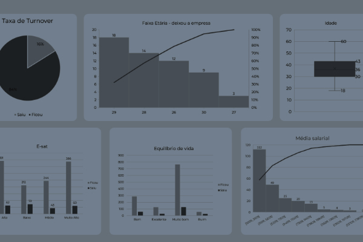
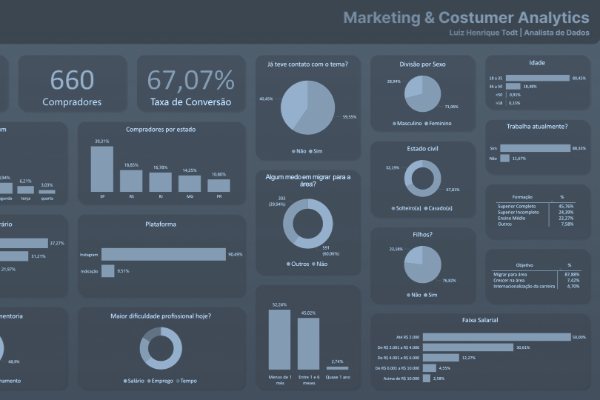

Diminuição de Turnover entre colaboradores
Análise sobre fatores/políticas que deveriam ser implementadas para minimizar o turnover em uma empresa de tecnologia.

Marketing Analytics
Análise de Conversão de Leads e Otimização de Estratégias de Marketing.